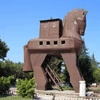

About Turkey
A country of in depth history and culture, the Turkish Republic is located where the three continents of the old world, Asia, Africa and Europe, are closest to each other and straddle the point where Europe and Asia meet. Because of this geographical location, the mainland Anatolia has witnessed the mass migration of diverse peoples, shaping the course of history. Home to countless civilizations, Anatolia has developed a unique synthesis of cultures, each with its own distinct identity, yet each linked to its predecessors through insoluble threads. As a modern nation in an ancient land, Turkey today is the inheritor and conservator of such an essential, shared heritage of humanity.
WHY TURKEY?
- Since the early days of the Silk Road, Turkey is the crossroad of creative exchange between Europe and Asia.
- Turkey is accessible from all corners of the world including Central Europe, Central Asia and Middle East because of its geographical location.
- The citizens of 99 countries can enter Turkey without visa.
- Turkey is a paradise for tourism.
- Turkey is a kaleidoscope of cultures and history. The beauty of the land and the spirit of the people make it an attractive and rewarding country. It is an optimistic, progressive nation with a proud and gracious way of life.
- Two of the Seven Wonders of the Ancient World were located in Turkey. • The Hagia Sophia is one of the Seven Medieval Wonders of the World.
- Over the centuries, visitors have been enthralled by the delightful tastes of Turkey´ s unique cuisine.
- Genuine warmth and generosity are characteristic of the hospitality extended to visitors since Turkish tradition declares that every traveler is "a guest of God. "
- Turkey is the only unique country in the world, celebrated children´ s day in every year on 23 April
DO YOU KNOW ABOUT TURKEY
 |
The only city in the world located on two continents is Istanbul, which has been the capital of three great empires, Roman, Byzantine and Ottoman for more than 2,000 years. | The world's oldest known settlement is in Catalhoyuk in central Anatolia, Turkey, and dates back to 6,500 BC. | |
| St Nicolas - the original Santa Claus - was born in Patara in Turkey and has a church dedicated to him in Demre. | The Virgin Mary spent her last days in Selcuk, İzmir, near the ancient city of Ephesus. | ||
| Leonardo da Vinci drew designs for a bridge over the Golden Horn, an inlet at mouth of the Bosphorus, that was never built. | Julius Caesar proclaimed his celebrated words "Veni. Vedi, Veci” (I came, I saw, I conquered) in Turkey when he defeated Pontus, a formidable Kingdom in the Black Sea Region of Turkey. | ||
| Aesop - famous for his fables and parables - was born in Anatolia. | The Turks introduced coffee to Europe when the retreating Ottoman army abandoned sacks of it at the gates of Vienna. | ||
| Homer (Homeros) was born in Izmir on the west coast of Turkey and he depicted Troy, which is north of Izmir, in his Epic the Iliad. | The smallpox vaccination was introduced to England and Europe from Turkey by Lady Montague in the early 19th century (after Turkish physicians saved her son's life). | ||
| Part of Turkey's south western shore was a wedding gift from Mark Antony to Cleopatra. |  | The famous Trojan Wars took place in western Turkey, around the site where a wooden model of the Trojan Horse has been erected at the site. | |
| Alexander the Great conquered a large territory in what is now Turkey and cut the Gordion Knot in the Phrygian capital (Gordium) not far from Turkey´ s present-day capital (Ankara). | The Temple of Artemis at Ephesus (today only base ruins remained in Selcuk, Izmir) | ||
| One of the seven wonders, The Mausoleum at Halicarnassus today only base ruins remained in Bodrum, Mugla |  |
Contrary to popular opinion, tulip originated not in Holland but on the Asian steppes. The Turks first gave the Dutch their famous tulips that started the craze for the flower in England and the Netherlands. There is a period of elegance and amusement in 17th century is named "The Tulip Age" in Ottoman Empire. | |
| The Seven Churches referred in the Book of Revelation are all found in Turkey: Ephesus, Smyrna, Pergamum, Thyatira, Sardis, Philadelphia and Laodicea. |  |
The most valuable silk carpet in the world is in the Mevlana Museum in Konya, Turkey. Marco Polo's journeys in the thirteenth centuries took him here, and he remarked that the "best and handsomest of rugs" were to be found in Turkey | |
| The first man ever to fly was Turkish. Using two wings, Hezarfen Ahmet Celebi flew from the Galata Tower over the Bosphorus to land in Uskudar in the 17th century. | Göbekli Tepe /Sanliurfa is the oldest human-made place of worship yet discovered.Dated to 7500 - 6000 BC. | ||
| The number of archaeological excavations going on in Turkey every year is at least 150 | The Amazons originated in Turkey's Northeastern region | ||
| Anatolia is the location of the first known beauty contest, judged by Paris, with Aphrodite, Hera and Athena as leading participants | World's first known bank is Teple of Sard Artemis located Salihli/Manisa. Banking task were fulfilled by priest of temple. |